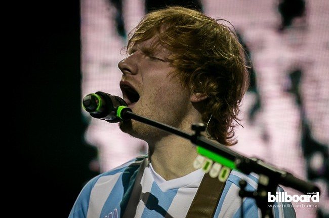

Sara Bareilles - Oscars
24 de Febrero de 2017

Sara Bareilles actuó durante la entrega de Premios de los Oscares edición 89 en Hollywood, California
Los Oscar 2017 se celebraron el domingo 26 de febrero y uno de los momentos más esperados de la ceremonia fue el 'In Memoriam', una sección en la que, durante unos minutos, se recordaró a aquellos profesionales de la industria del cine que murieron en 2016. Durante ese período de tiempo, la famosa cantante y compositora de origen portugués Sara Bareilles fue la encargada de interpretar una canción para homenajear a aquellos que nos han dejado.
Como en cada una de sus actuaciones, nos ofreció un show impacable y emotivo.
Ed Sheeran - Tour 2017 Argentina
4 de Marzo de 2017
El compositor británico regresará en mayo al país para presentar su nuevo disco / (divide) con un show en el Estadio Único De La Plata
Nuestro músico pelirrojo más famoso del mundo no para de batir récords musicales. Con tan sólo 25 años vendió 22 millones de álbumes en todo el mundo, tiene 4,7 billones de reproducciones en Spotify y 3,5 visitas en su perfil oficial de Youtube.
Después de una primera visita en abril de 2015, cuando cantó con la camiseta de fútbol argentina puesta y llenó el Luna Park en dos ocasiones, volverá a presentarse en la Argentina el sábado 20 de mayo. La gira que lo llevará por Europa y América latina comenzará en Italia el 17 de marzo y durará hasta junio.